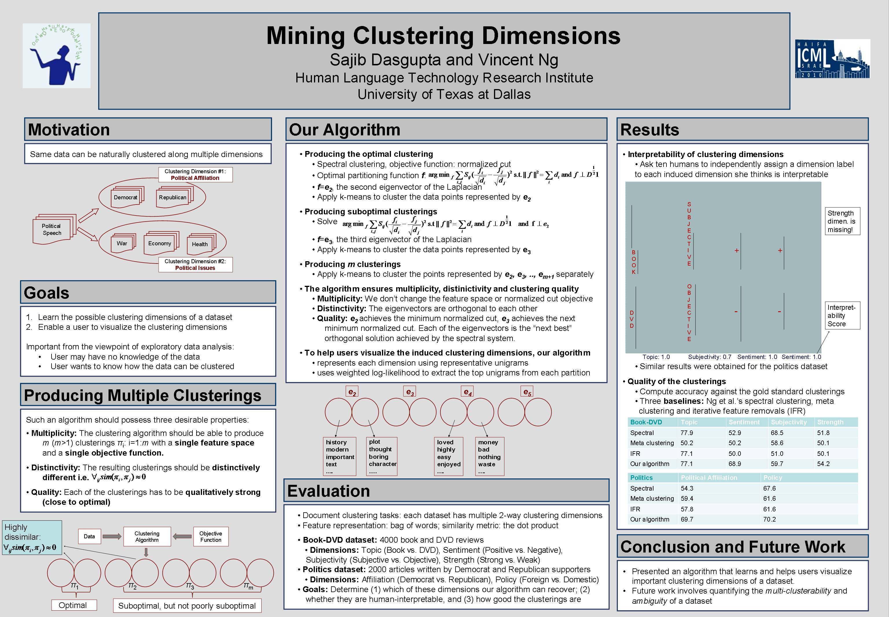

Mining Clustering Dimensions
Sajib Dasgupta and Vincent Ng.
Proceedings of the 27th International Conference on Machine Learning, pp. 263-270, 2010.
Click here for the
PostScript or PDF
version.
The talk slides are available here.
Abstract
Many real-world datasets can be naturally
clustered along multiple
dimensions.
For example, text documents can be clustered not only by topic, but also
by the author's gender or sentiment.
Unfortunately, traditional clustering algorithms produce only a single
clustering of a dataset, effectively providing a user with just a single view
of the data.
In this paper, we propose a new clustering algorithm that can discover in an unsupervised manner
each
clustering dimension along which a dataset can be meaningfully clustered.
Its ability to reveal the important clustering dimensions
of a dataset in an unsupervised manner is particularly
appealing for those users who have
no idea of how a dataset can possibly
be clustered. We demonstrate its viability
on several challenging text classification tasks.
BibTeX entry
@InProceedings{Dasgupta+Ng:10b,
author = {Sajib Dasgupta and Vincent Ng},
title = {Mining Clustering Dimensions},
booktitle = {Proceedings of the 27th International Conference on Machine Learning},
pages = {263--270},
year = 2010
}
